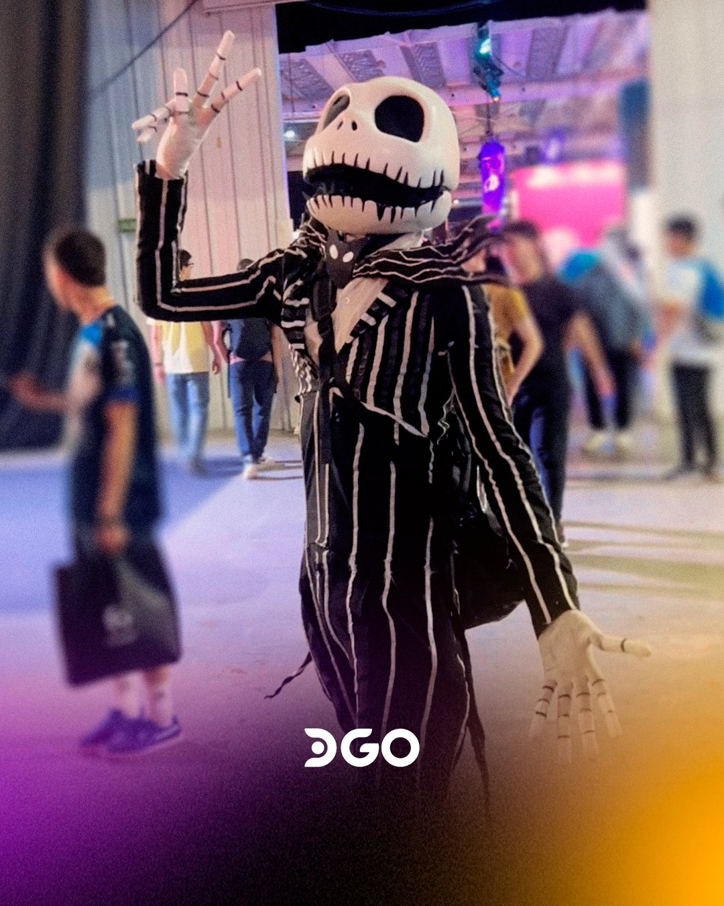
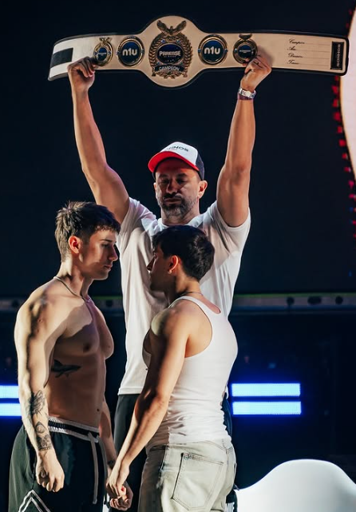
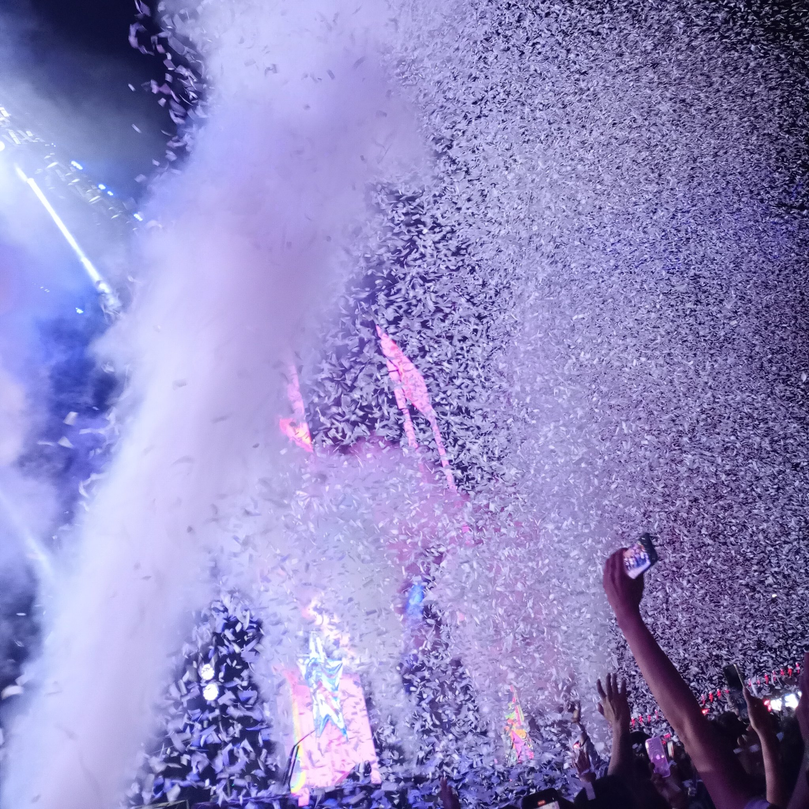
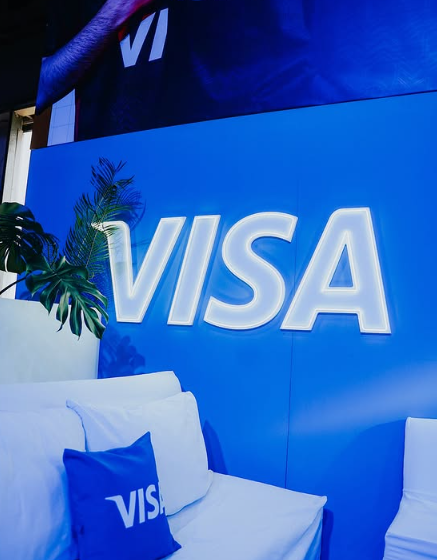
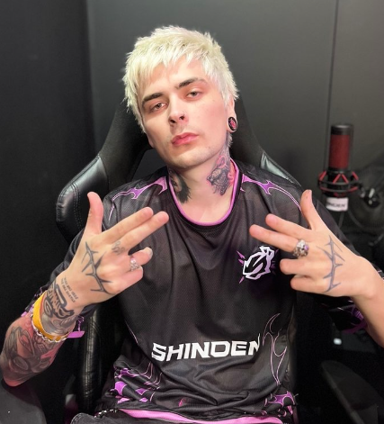
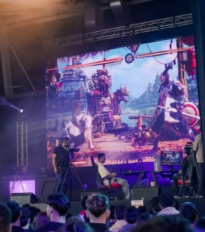

Te contamos lo que fue La Decima Edición de Argentina Game Show 2024!

Cosplayers de todos los mundos participaron en el Consurso de Cosplays en el escenario de Compra Gamer!
Salidos de las peliculas como Jack del "Extraño Mundo de Jack", Deadpool, Iroman, Harry Potter; y hasta de los videojuegos como Yandere, Jinx, Sylvanas Windrunner, Saylor Moon y el Ganador con Murandin de Warcraft!

El ring llegó a AGS2024!
Dos meses antes de que se viviera Parense de Manos, los competidores tuvieron un Cara a Cara en el escenario de AGS.
Entre los competidores mas destacables tuvimos a:
El Ruso Vs Maravilla, EL CAMPEON MUNDIAL DE BOXEO!

Miles de Shows con Artistas Increibles: Robleis, Seven Kayne, La T y la M, Roze, Dj Baby Cue, Fer Palacio, hasta Khea como invitado sopresa y muchos artistas mas de diversos generos pasaron por el escenario principal de LA DECIMA!

Marcas importantes participaron en AGS2024:
Corsaid, Coca Cola, Fanta, Shell, Redragon, Compra Gamer, Speed y muchas mas estuvieron presentes tanto en sus respectas areas como tambien en torneos y actividades.
Pero el principal fue Visa!
Visa se sumó a AGS haciendo posible que se puedan adquirir entradas y Mystery Rewards de forma fácil, rápida, segura y al mejor precio.

Influencers y grandes artistas estuvieron presentes en AGS2024!
El ejemplo de Lit Killah que pudimos verlo en el Stand de Shinden, al igual que a Spreen.
Streamers como Brunenger, Coscu, Momo, el Demente y muchos mas compartieron momentos inolvidables con sus comunidades! La comunidad de AGS esta ansiosa de saber a quien veremos este año en su Edicion N°11!

Se organizaron muchos torneos durante los 3 dias, tanto de Gamming en juegos como: PUBG, Counter Strike2, Rocket League, Mortal Kombat, entre otros con incleibles premios; y toneos de disciplinas fisicas: basquet, paddel, futbol, dominadas, entre otros.
Torneos para todos los gustos!